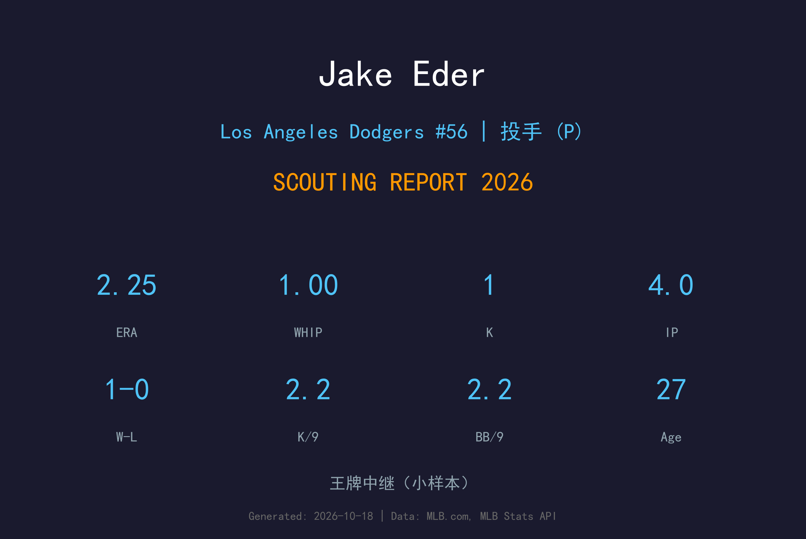
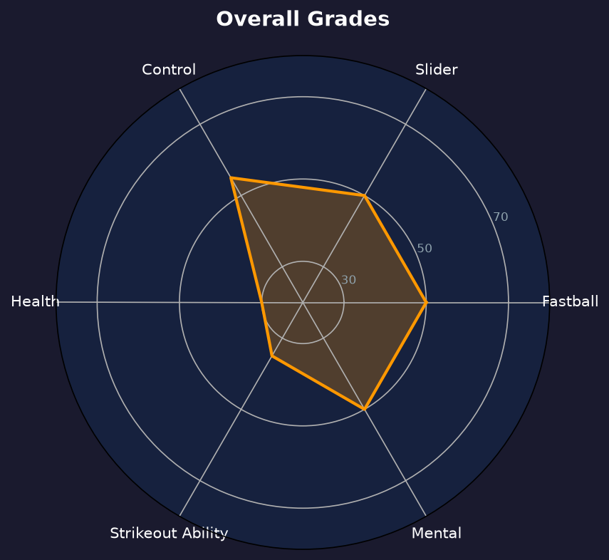

⚾ Jake Eder
Los Angeles Dodgers #56 | 左投后援 | 曾受 TJ 手术的前顶尖新秀

基本信息
球探总评
Jake Eder 的故事是"前顶尖新秀被伤病改写"的标准剧本：2020 年选秀会上他是马林鱼体系的头部左投 prospects，95-98 mph 的速球配上锋利滑球，一度是全联盟前 100 大新秀；2021 年 7 月接受 Tommy John 手术，此后四年都在与复健和找回球速作斗争。
2026 年他经历国民（DFA）→ 道奇（4 月 1 日现金交易）→ 4 场后援出赛（1-0、2.25 ERA、1.00 WHIP）→ 7 月 1 日进 7 天伤病名单 → 7 月 6 日被释出。4 局 1 三振的数据说明他的速球再也回不到从前，但 2.25 ERA 证明他仍能用控球与经验在有限局面里制造出局。
10 月 17 日他加盟多米尼加冬季联盟 Gigantes del Cibao，28 岁的他还在试图延长职业生涯。生涯 13 场 4.44 ERA 是他目前交出的全部答卷。
🏆 职业生涯亮点
⭐ 2020 - 马林鱼第4轮，飞速崛起
选秀后隔年就在 1A 以三振能力横扫联盟，升上 2A 后速球依旧无解，一度跻身棒球 America 全联盟前 100 大新秀。
🏥 2021 - Tommy John 手术，命运转折
2021 年 7 月韧带重建手术，此后两个完整赛季报销。复出后球速从 96-98 掉到 92-94，三振能力大幅缩水。
🌟 2024 - 大联盟首秀（白袜）
经历马林鱼→白袜（Jake Burger 交易案）的流转后，2024 年 9 月 17 日完成大联盟首秀；2025 年在天使队 8 场后援。
🔵 2026 - 道奇的短暂停留
3 月 28 日被国民 DFA，4 月 1 日被卖到道奇；4 场后援 2.25 ERA、1.00 WHIP 拿下生涯首胜；7 月 1 日进伤病名单，7 月 6 日被释出，10 月赴多米尼加冬季联盟。
📊 2026赛季投球数据
极小样本：4 局仅 1 三振——TJ 手术前的 Eder 是 K/9 破 10 的三振机器，如今的他完全靠控球与软弱击球生存。ERA 好看，但压制力已不可同日而语。
📊 近年投球数据对比

近年投球数据对比
| 赛季 | 球队 | G | IP | ERA | WHIP | K | BB |
|---|---|---|---|---|---|---|---|
| 2025 | Los Angeles Angels | 8 | 18.1 | 4.91 | 1.31 | 15 | 9 |
| 2026 | Los Angeles Dodgers | 4 | 4.0 | 2.25 | 1.00 | 1 | 1 |
对比两年：2025 年他在天使还有 7.4 K/9，2026 年掉到 2.25 K/9——球速与挥空能力的流失是线性的。2.25 ERA 与 1.00 WHIP 说明他学会了用 92 mph 的速球边缘与变速球"偷局数"，但这碗饭能吃多久，取决于左肩与手肘的耐久度。生涯 13 场 4.44 ERA / 1.27 WHIP。
🔍 球探分析
从三振机器到控球艺术家的被迫转型
TJ 手术前的 Eder 靠 96-98 mph 速球与锋利滑球三振打者；如今的他速球 92-94，滑球锐利度大减。2026 年 4 局 1 三振不是偶然——他的生存策略已经变成"让打者第一球就打成软弱滚地"。这种转型在 28 岁还算成功（2.25 ERA / 1.00 WHIP），但天花板也被彻底锁死。
伤病是唯一的主题
2021 年 TJ 手术、此后多年复健，2026 年 7 月 1 日又进 7 天伤病名单（道奇 7 月 6 日随即释出）。他的身体已经不允许连续出赛，这是所有球队对他敬而远之的根本原因——不是能力不够，是无法被依赖。
道奇 4 场的样本价值
4 场出赛拿下生涯首胜，2.25 ERA 是他大联盟生涯最亮的一段。但道奇在伤病名单后直接选择释出而非等待，说明球队评估他的身体风险已大于投球价值。对 Eder 来说，冬季联盟是他向各队球探展示"还能连续出赛"的最后舞台。
✅ 优势 vs ❌ 劣势
优势 (Strengths)
- 2026 年 2.25 ERA / 1.00 WHIP，转型控球型后援初见成效
- 左投身份，对左打者有 matchup 价值
- 6'4"/225 体格，出手角度有隐蔽性
- 曾是大联盟顶级新秀，底子与球商仍在
- 成本极低，小联盟合约即可拥有
劣势 (Weaknesses)
- TJ 手术后球速掉 3-4 mph，三振能力几乎消失（2026 K/9 2.25）
- 伤病史严重，2026 年 7 月再度进 IL 后被释出
- 28 岁仍在漂泊，四年换四队（马林鱼→白袜→天使→国民→道奇）
- 无法连续出赛，无法承担固定牛棚角色
- 样本太小，真实水平难以评估
📊 综合评分

总体评分
被伤病改写命运的控球型左投
C+ 级 / 名单边缘
🔮 未来展望
Eder 的 2027 年取决于多米尼加冬季联盟的表现与体检结果。如果能连续出赛且 ERA 维持在 3 以下，他会得到小联盟合约；任何一次手臂不适都可能是职业生涯的终点。从顶级新秀到冬季联盟，他用了五年。
2026赛季实际轨迹
2026：3/28 被国民 DFA → 4/1 现金交易到道奇 → 4/20 登上大联盟（4 场 2.25 ERA、生涯首胜）→ 7/1 进 7 天 IL → 7/6 被释出 → 10/17 加盟 Gigantes del Cibao
2027：小联盟合约 + 春训邀请，前提是冬季联盟无伤病
2028+：若身体允许，可长期担任 organizational depth 左投；否则退役
风险因素
- TJ 手术史 + 反复伤病，身体是最不可控的变量
- 三振能力流失不可逆，球速继续下滑则失去所有武器
- 小样本下 2.25 ERA 的成色未经完整赛季验证
📖 背景故事
Jake Eder 1998 年 10 月 9 日出生于佛罗里达州博因顿海滩（Boynton Beach, Florida），大学就读佛罗里达大学附近... 实际上他直接从高中进入职业：2020 年 MLB 选秀，迈阿密马林鱼在第 4 轮选中这位 6 尺 4 寸的左投。新秀赛季的他在 1A 投出统治级数据，速球 96-98 mph，滑球被球评誉为"大联盟 Ready"，隔年升上 2A 后依旧无往不利——那时他的名字常与"马林鱼下一个王牌"联系在一起。
2021 年 7 月，命运出手了：Tommy John 手术。韧带重建、两年复健、复出后球速掉了三英里。2023 年他被交易到芝加哥白袜（Jake Burger 交易案的一部分），2024 年 9 月 17 日完成大联盟首秀——距离他最后一次健康投球已过去三年。2025 年他在洛杉矶天使找到短暂落脚点，2026 年开季被华盛顿国民捡走又迅速 DFA，4 月 1 日被卖到道奇。
在道奇的 4 场出赛是他生涯最亮的一段：2.25 ERA、1.00 WHIP、生涯首胜。但 7 月 1 日的伤病名单让一切戛然而止——五天后他被释出。10 月 17 日，他出现在多米尼加冬季联盟的赛场上。从全联盟前 100 大新秀到冬季联盟，Jake Eder 的故事还没有写下结局，但每一笔都写满了职业棒球的残酷与韧性。